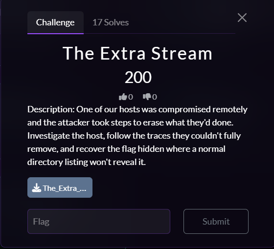
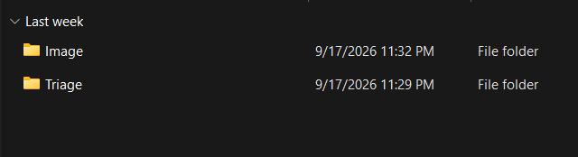
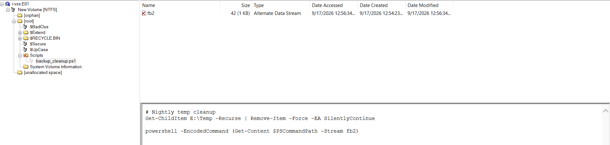
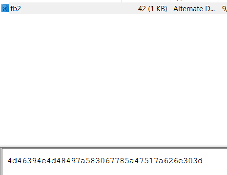
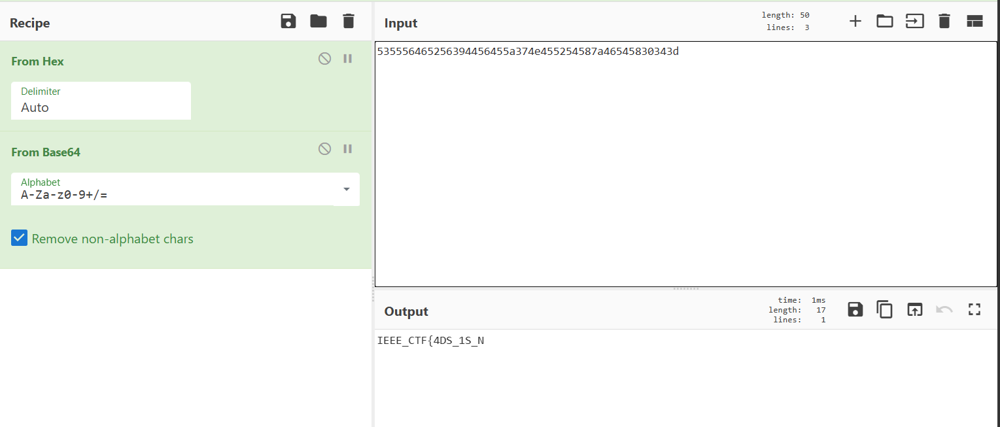
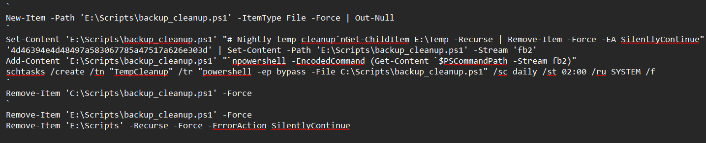
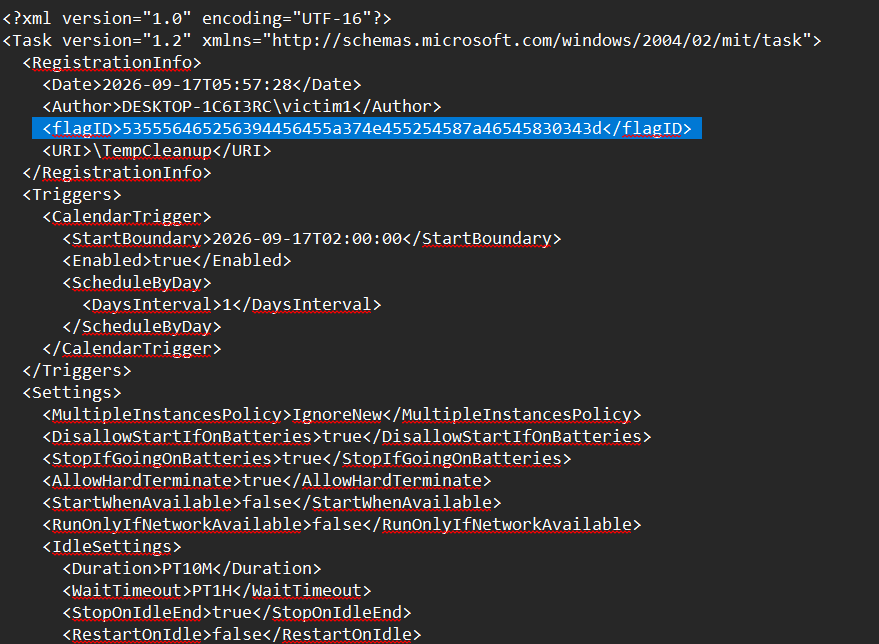

Introduction
Hello everyone! It's me again, and this time I'm working on a new CTF called Victories, powered by the IEEE Mansoura Student Branch and EG-CERT.

In this challenge, we are given access to a compromised victim machine. According to the challenge description, the machine was compromised remotely, and the attacker attempted to erase their traces.
We are provided with two folders containing the forensic evidence. The goal is to investigate the artifacts left behind by the attacker and recover the hidden flag.
Starting The Investigation
I started the investigation by examining the disk image (E01) located at:
The_Extra_Stream\The Extra Stream\ImageWhile examining the evidence, I found something suspicious related to a PowerShell script.

Identifying The Suspicious PowerShell Activity
The suspicious script contained a combination of PowerShell commands
involving $PSCommandPath, an Alternate Data Stream named
fb2, and -EncodedCommand.
Get-Content $PSCommandPath -Stream fb2
powershell -EncodedCommand (Get-Content $PSCommandPath -Stream fb2)
The combination of these techniques immediately caught my attention.
The -Stream fb2 parameter is used to access an
NTFS Alternate Data Stream (ADS), which can store data
separately from the normal contents of a file.
The script then retrieves the contents of this hidden stream and passes
them to PowerShell through -EncodedCommand.
This is suspicious because an attacker can use this technique to conceal data or a payload inside a file while keeping the normal file contents looking harmless.

Investigating The fb2 Alternate Data Stream
To understand what was hidden inside the ADS, I examined the contents
of the fb2 stream.
The stream contained the following value:
4d46394e4d48497a583067785a47517a626e303dAt this point, the value looked like hexadecimal data, so I used CyberChef to decode it.

fb2 Alternate Data Stream.
Decoding the Hex produced:
MF9NMHIzX0gxZGQzbn0=The resulting value has the familiar structure of a Base64-encoded string, so I decoded it again.

The final result was:
0_M0r3_H1dd3n}This revealed the first hidden part of the flag.
Following The PowerShell History
After discovering the hidden data, I wanted to determine how the attacker used the PowerShell script. The next step was therefore to investigate the PowerShell command history.
The PowerShell history was located at:
The_Extra_Stream\The Extra Stream\Triage\C\Users\victim1\AppData\Roaming\Microsoft\Windows\PowerShell\PSReadlineThe history file is a normal text file, so it can be opened directly using a text editor.

Discovering The TempCleanup Scheduled Task
While examining the PowerShell history, I found that the attacker created a scheduled task named:
TempCleanupThe task was configured to execute the PowerShell script daily at 02:00.
The command also used:
-ep bypasswhich configures PowerShell to use the Bypass Execution Policy for that execution.
The attacker then attempted to remove the script they had created. However, they did not remove the scheduled task itself.
I therefore searched for the scheduled task inside:
C:\Windows\System32\TasksInvestigating The Scheduled Task XML
Inside the task definition, I found the task associated with
TempCleanup.
When I opened the task's XML definition, I found a custom XML field containing:
<flagID>535556465256394456455a374e455254587a46545830343d</flagID>The value looked encoded again, so I copied it into CyberChef for further analysis.

TempCleanup scheduled task XML containing the custom
flagID field.
Decoding The Second Flag Part
I first decoded the Hex value:
SUVFRV9DVEZ7NERTXzFTX04=The result was another Base64-encoded value, so I decoded it again.

This produced:
IEEE_CTF{4DS_1S_N0We now have both parts required to reconstruct the complete flag.
Final Flag
IEEE_CTF{4DS_1S_N0_M0r3_H1dd3n}
Investigation Summary
The investigation followed a chain of artifacts left behind by the attacker:
E01 Forensic Image
↓
PowerShell Script
↓
NTFS Alternate Data Stream (fb2)
↓
Hex → Base64
↓
First Flag Part
↓
PowerShell History
↓
TempCleanup Scheduled Task
↓
Task XML
↓
flagID
↓
Hex → Base64
↓
Second Flag Part
↓
Final FlagConclusion
This challenge was a great example of how an attacker can attempt to clean up their activity while still leaving useful forensic artifacts behind.
The most interesting part of the investigation was the use of an
NTFS Alternate Data Stream to hide encoded data inside
the PowerShell script. The attacker also created a scheduled task named
TempCleanup and later removed the script without removing
the scheduled task itself.
By following the remaining artifacts from the E01 image to the PowerShell history and finally to the scheduled task XML, I was able to recover both parts of the flag.
I really enjoyed this CTF. It was a great forensic investigation and a fun challenge to work through.